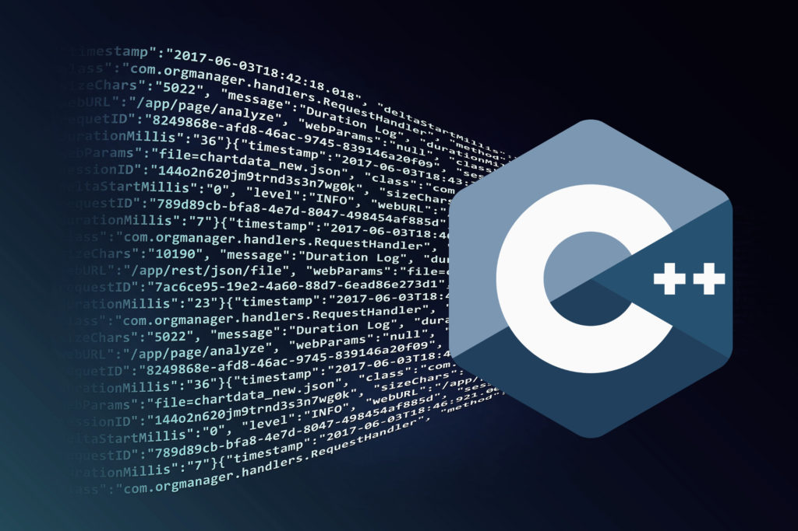

О создании C++

C++ компилируемый язык программирования общего назначения, сочетает свойства как высокоуровневых, так и низкоуровневых языков программирования. В сравнении с его предшественником, языком программирования Cи, наибольшее внимание уделено поддержке объектно-ориентированного и обобщённого программирования. Название «язык программирования C++» происходит от языка программирования C, в котором унарный оператор обозначает инкремент переменной. Язык программирования C++ широко используется для разработки программного обеспечения. А именно, создание разнообразных прикладных программ, разработка операционных систем, драйверов устройств, а также видео игр и многое другое. Существует несколько реализаций языка программирования C++ — как бесплатных, так и коммерческих. Их производят проекты: GNU, Microsoft и Embarcadero (Borland). Проект GNU — проект разработки свободного программного обеспечения (СПО). Бьёрн Страуструп придумал ряд усовершенствований к языку программирования C, для собственных нужд. Т. е. изначально не планировалось создания языка программирования С++. Ранние версии языка С++, известные под именем «Cи с классами», начали появляться с 1980 года. Язык C, будучи базовым языком системы UNIX, на которой работали компьютеры фирмы Bell, является быстрым, многофункциональным и переносимым. Страуструп добавил к нему возможность работы с классами и объектами, тем самым зародил предпосылки нового, основанного на синтаксисе С, языка программирования. Синтаксис C++ был основан на синтаксисе C, так как Бьёрн Страуструп стремился сохранить совместимость с языком C.